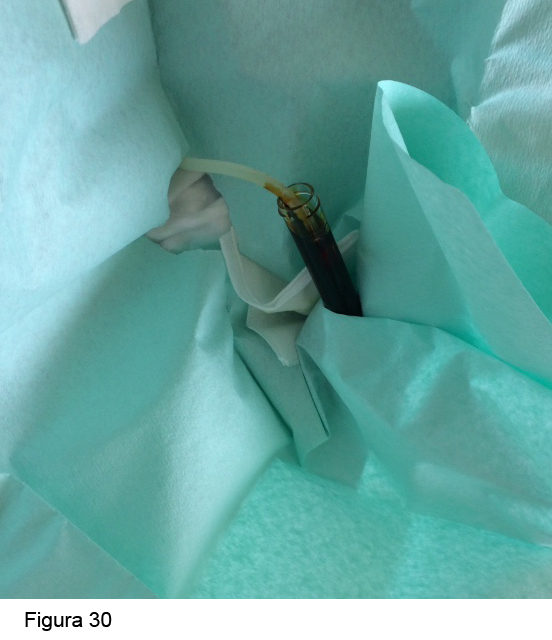

<div class="pages">
  <div data-page="projects" class="page no-toolbar no-navbar">
    <div class="page-content">
    
     <div class="navbarpages">
       <div class="navbar_home_link"><a href="toogle.html"></a></div>
       <div class="navbar_page_center"><b>Especialidades</b></div>
       <div class="menu_open_icon_white"><a href="#" class="open-panel"></a></div>
     </div>
     <div id="pages_maincontent">

          <h2 class="page_subtitle">Diálisis Peritoneal - Incidencias en DP </h2>
          <p><b>Autor/a:</b> Cristina Campillo y Maite Rivera. Servicio de Nefrología - Hospital Ramón y Cajal, Madrid</p>
          <div class="page_single">         
              <div class="buttons-row">
                    <a href="#tab3" class="tab-link active button">Hemoperitoneo</a>
                    <a href="#tab4" class="tab-link button">Edema genital</a>
                    <a href="#tab5" class="tab-link button">Problemas de flujo</a>
                    <a href="#tab6" class="tab-link button">Problemas de infusión</a>
                    <a href="#tab7" class="tab-link button">Alteraciones de la volemia</a>
              </div>
              <br />
              <div class="buttons-row">
                    <a href="#tab8" class="tab-link button">Dexconexiones inadvertidas</a>
                    <a href="#tab9" class="tab-link button">Hidrotórax</a>
                    <a href="#tab10" class="tab-link button">Fuga pericatéter</a>
                    <a href="#tab11" class="tab-link button">Cambio de prolongador</a>
                    <a href="#tab12" class="tab-link button">Quiloperitoneo</a>
              </div>
              
              <div class="tabs-simple">
                    <div class="tabs">
                        <div id="tab3" class="tab active">
                              <br />
                              <h4>Hemoperitoneo</h4>
                              <p class="nojustify">
                                  Se define como la presencia de sangre en el líquido de DP. El líquido de drenaje adquiere un color rosa o rojo intenso. Unas gotas de sangre (2 ml) son suficientes para teñir 2 l de dializado. El color de la bolsa puede ser orientativo: a menor cantidad de sangre, menos intenso es el rojo.<br />
                                    Es una complicación de poca importancia, salvo que la coloración sea de sangre oscura (hemorragia franca). Los hemoperitoneos intensos pueden producir anemización e inestabilidad hemodinámica, tratándose más bien de hemorragias intraabdominales (rotura de bazo, rotura de aneurisma de aorta abdominal, etc.).<br />                       
                                    Como consecuencia del hemoperitoneo, la sangre o fibrina pueden producir la obstrucción del catéter peritoneal.<br /><br />
                                
                                
                                <b>Causas</b> <br />
                                
                                &bull;&nbsp; Banales (las más frecuentes)
                              </p>
                              <blockquote class="sin">	
                                - Ovulación o menstruación, que suele ceder espontáneamente (las trompas están abiertas al peritoneo)<br />
                                - Enemas, roce del catéter con un asa, traumatismos menores.
                              </blockquote>
                              <p class="nojustify">
                                &bull;&nbsp; Secundario  a procesos mayores abdominales: tumores (colon y riñón), quistes, esclerosis peritoneal, pancreatitis, trastornos de la coagulación, etc.<br /><br /> 
                                
                                
                                <b>Actitud</b><br />
                                
                                &bull;&nbsp; El paciente debe ponerse en contacto con la Unidad de Diálisis Peritoneal.<br />
                                &bull;&nbsp; Comprobar el grado de sangrado: solicitar hemograma del líquido: 
                             </p>
                             <blockquote class="sin">
                                - Si hematocrito < 2%,  es leve y no necesita ingreso. (Figura 25)<br />
                                - Si hematocrito > 2%, el hemoperitoneo es grave → ingresar al paciente, coger vía, cruzar sangre, solicitar analítica completa con hemostasia y TAC abdominal.
                                <br /><br />
                             </blockquote>
                             <p class="nojustify">
                                &bull;&nbsp; No es necesario suspender la DP. <br />
                                &bull;&nbsp; Los intercambios siguientes se harán con bolsa de dializado a temperatura ambiente (no calentadas) o frías, a las que se administrará 1 cc de HepNa al 1% (no se absorbe a la sangre) hasta que el líquido salga claro.

                              </p>   
                      </div>
                      <div id="tab4" class="tab">
                              <br />
                              <h4>Edema genital</h4>
                              <p class="justify">
                                  Se presenta como edema de labios mayores, escroto o pene. En general, se produce al inicio del tratamiento con DP. Es más frecuente en hombres. Suele asociar disminución del volumen de drenaje peritoneal.<br /><br />


                                    <b>Causas</b><br />
                                    
                                    Hernias inguino-escrotales, inguinales, persistencia del conducto peritoneo-vaginal,  o sobrecarga de volumen (más raro).<br /><br />
                                    
                                    
                                    <b>Diagnóstico</b><br /> 
                                    
                                    Exploración de la piel y genitales, edema uni o bilateral. Explorar la región inguinal: búsqueda de edema y/o hernia asociada. Descartar sobrecarga de volumen a otros niveles. Para filiarlo correctamente, a menudo se necesita una prueba de imagen (gammagrafía peritoneal o peritoneografía con TAC).<br /><br />
                                    
                                    
                                    <b>Tratamiento</b><br />
                                    
                                    -	<b>En urgencias:</b> solo urgente si aparece en un contexto de sobrecarga de volumen. Tranquilizar al paciente y remitirlo a consultas. Hacer los tests diagnósticos de manera ambulatoria. <br /><br />
                                    
                                    -	<b>Ambulante:</b> 
                              </p>
                              <blockquote class="sin">
                                    - Procurar reposo en cama con elevación escrotal y calzoncillo tipo slip.<br /><br />
                                    - <u>Pauta de diálisis</u>: Disminuir volumen de infusión (1 l),  pasar a DPI o DPIN. Si no cede y el paciente tiene función renal residual suficiente, descanso de DP durante 2-4 semanas. Si no puede hacer descanso peritoneal, programar su reparación quirúrgica (cierre del conducto peritoneo-vaginal). En caso de hernia inguinal asociada, hacer herniorrafia con colocación de malla. En caso de tratarse de una sobrecarga de volumen, pautar intercambios cortos (de 2 h) con soluciones hipertónicas hasta la euvolemia. La icodextrina está indicada en el intercambio largo por su elevado poder de extracción acuoso y para respetar el sueño nocturno.
								</blockquote>
                      </div> 
                      <div id="tab5" class="tab">
                              <br />
                              <h4>Problemas de flujo</h4>
                              <p class="justify">
                                  Los problemas de drenaje se definen como la incapacidad para drenar una cantidad sensiblemente inferior a la cantidad de líquido infundido, condicionando balance positivo. Se han de excluir las fugas de cualquier tipo, el fallo de UF y la peritonitis.<br /><br />

                                <b>CAUSAS</b>
                              </p>
                                <blockquote class="sin">
                                    - <u>Extraluminales:</u> La causa más frecuente es el estreñimiento que, junto a los problemas de posición del catéter (malposición, migración de la punta, desplazamiento o acodamiento), constituyen el 80% de las causas.<br /><br />
                                    - <u>Intraluminales:</u> Puede ser debido a obstrucción del catéter (por fibrina o coágulos) o su atrapamiento por epiplón.<br /><br />
                                </blockquote>
                              <p class="justify"> 
                                <b>DIAGNÓSTICO</b><br />
                                
                                Se suele llegar a un diagnóstico exacto siguiendo los pasos:
                              </p>
                              <blockquote class="sin">  
                                -	Anamnesis (preguntar por presencia de fibrina en bolsa de drenado, ritmo de deposición, turbidez del  líquido, etc.)<br /><br />
                                -	Exploración clínica (signos de peritonismo, hernias, colecciones pericatéter...)<br /><br />
                                -	Comprobar la dificultad de drenaje en la Unidad de DP. Observar el efluente para detectar la presencia de fibrina (Figura 26).<br /><br />
                                -	RX simple de abdomen en bipedestación (el catéter tiene una banda radiopaca y es fácilmente visible en la RX). Con la RX de abdomen se descartará la malposición del catéter y el estreñimiento (Figura 27).<br /><br />
                               </blockquote> 
                               <p class="justify">  
                                <b>ACTUACIÓN</b><br />
                                
                                Dado que la causa más frecuente es el estreñimiento, se indicarán laxantes y/o un enema de limpieza, así como movilización (paseos). Bajo ningún concepto el paciente  debe abrir  la conexión para desobstruir el catéter. Se pondrá heparina en la bolsa de infusión ante la eventualidad de obstrucción con fibrina. Si se sospecha obstrucción por fibrina y la heparina no ha surtido efecto, pautar heparina y/o urokinasa en bolo. En caso de evidenciar malposición del catéter, realizar la “maniobra alfa”, que consiste en la recolocación del catéter bajo control radioscópico con guía flexible. Por último, si la malposición no se corrige con la maniobra alfa, podría ser necesaria la recolocación del catéter mediante laparoscopia, el recambio del catéter por uno nuevo, la omentectomía o la adhesiolisis.

                              </p>
                      </div> 
                      <div id="tab6" class="tab">
                              <br />
                              <h4>Problemas de Infusión</h4>
                              <p class="justify">
                                  Consiste en la dificultad para introducir el líquido en la cavidad peritoneal. Son menos frecuentes que los problemas de drenaje.<br /><br />

                                    <b>CAUSAS</b><br />                                
                                    Obstrucción del catéter con fibrina o atrapamiento por epiplón.<br /><br />
                                    
                                    <b>TRATAMIENTO</b><br />                         
                                    Depende de la causa: bolo de heparina y/o de urokinasa, omentectomía. <br /><br />
                                    
                                    - <u>BOLO DE HEPARINA</u><br />                                    
                                    1. Sentar al enfermo y descubrir abdomen.<br /><br />
                                    2. Ponerse mascarilla, lavado semi-quirúrgico de manos.<br /><br />
                                    3. Preparar material: 1 paño estéril, 1 par de guantes estériles, una  jeringa de 20 cc cargada con 5 cc de heparina al 1%, diluida hasta los 20 cc de la  jeringa con salino o G5%.<br /><br />
                                    4. Colocar campo estéril.<br /><br />
                                    5. Quitar el tapón del prolongador. La jeringa adapta perfectamente al prolongador. <br /><br />
                                    6. Inyectar a  presión el suero heparinizado observando si existe resistencia a la entrada, dejando la jeringa conectada.<br /><br />
                                    7. Esperar 15-30 min. A continuación, quitar la jeringa y realizar un cambio de diálisis normal, añadiendo a la bolsa 1 g de cefazolina  y 5 cc de heparina al 1%.<br /><br />
                                    8. Si no funciona, ensayar con urokinasa.<br /><br />
                                    
                                      
                                    - <u>BOLO DE UROKINASA</u><br />                                    
                                    1. Medidas higiénicas y material igual que el anterior, a excepción de jeringa de 10 ml cargada con 250.000 U de urokinasa diluidas en glucosado o fisiológico.<br /><br />
                                    2. Inyectar a través del catéter la urokinasa diluida, cerrando el sistema durante 4-6 h, pudiendo alargarse hasta 10-12 h. Esta operación se puede repetir hasta un máximo de 3 veces, es decir, a una dosis máxima de 750.000 U de urokinasa. <br /><br />
                                    3. Comprobar efectividad pasadas 10-12 h.<br /><br />
                                    4. Si no se ha puesto con el bolo de heparina, administrar cefazolina 1 g IP.

                              </p>
                      </div> 
                   <div id="tab7" class="tab">
                              <br />
                              <h4>Alteraciones de la volemia</h4>
                              <p class="justify">
                                  <b>SOBRECARGA DE VOLUMEN</b><br />
                                    El paciente suele acudir con los signos clásicos: aumento de peso, edemas en miembros inferiores o generalizados, HTA y/o disnea por insuficiencia cardiaca. <br /><br />
                                    
                                    <b>Causas</b><br />                                    
                                    Problemas de drenado, ingesta excesiva de líquidos (balance positivo) superando las salidas (diuresis + UF) o disminución inadvertida de la diuresis residual.<br />                                    <br />
                                    
                                    <b>Diagnóstico</b> <br />                                    
                                    Además de la historia clínica y la exploración física (no olvidar revisar los balances de diálisis), es útil la realización de una bioimpedancia. En caso de insuficiencia cardíaca puede ser útil una RX de tórax y la medida del BNP. <br /><br />
                                    
                                    <b>Actitud</b><br />                                    
                                    INGRESO: En caso de problemas de drenado, proceder como se ha indicado. En caso de drenado adecuado, hacer varios cambios cortos (de 2 h) con glucosa al 2,27% y alguno de 3,86%. Pesar al paciente tras cada intercambio para confirmar que el procedimiento está siendo efectivo y continuar hasta alcanzar el peso deseado (basal) o ausencia de edemas. Puede usarse furosemida a altas dosis (125 mg o 250 mg VO o IV) si el paciente tiene diuresis residual. En caso de insuficiencia cardíaca o edema agudo de pulmón, pautar una HD urgente.<br /><br />                                    
                                    
                                    <b>HIPOVOLEMIA</b><br />                                    
                                    Se presenta como hipotensión, cansancio, astenia y disminución de peso.<br /><br />                                    
                                    
                                    <b>Causas</b><br />                                    
                                    Excesiva UF, pérdidas gastrointestinales (diarrea), pérdidas renales (abuso de diuréticos), ingesta hídrica escasa.<br /><br />
                                    
                                    <b>Diagnóstico</b><br />                                    
                                    Además de la historia clínica (no olvidar revisar los balances de diálisis) y la exploración física es útil la realización de una bioimpedancia.<br /><br />
                                    
                                    <b>Actitud</b><br />                                    
                                    Hidratación (oral e intravenosa), disminuir la concentración de glucosa de los intercambios para realizar balances positivos. Hay que pesar al paciente y explorarle con frecuencia para evitar sobrecarga de volumen.
                              </p>
                      </div> 
                      <div id="tab8" class="tab">
                              <br />
                              <h4>Desconexiones inadvertidas</h4>
                              <p class="justify">
                              	A veces el paciente tiene desconexiones del sistema en su domicilio (no enrosca bien el sistema, lo deja abierto...), lo que supone un riesgo de peritonitis. <br /><br />

                                <b>Actitud</b><br />                               
                                Se le recomendará al paciente acudir inmediatamente al hospital, donde se realizará un intercambio peritoneal con una dosis de antibiótico como profilaxis de la peritonitis (cefazolina 1 g IP o vancomicina 1 g IP si alergia).
                              </p>
                      </div> 
                    <div id="tab9" class="tab">
                        <br />
                        <h4>Hidrotórax</h4>
                        <p class="justify">
                            Se define como acúmulo de dializado en el espacio pleural a través de defectos congénitos en la pleura de forma congénita o adquirida (por ejemplo, tras una peritonitis), fundamentalmente en el lado derecho y con preferencia en mujeres (Figura 28).<br /><br /> <br />Más frecuente al inicio de la técnica, aunque se ha descrito meses o años después. A menudo es asintomático (hallazgo en RX de tórax) o se acompaña de síntomas respiratorios (disnea, dolor torácico) y bajo volumen de drenaje. Diagnóstico diferencial con  la sobrecarga de volumen y con el derrame pleural de otro origen. <br /><br />

                            <b>Diagnóstico</b><br />                     
                            Se realiza mediante toracocentesis (líquido con  bajo contenido  en proteínas y alto en glucosa) o gammagrafía peritoneal, que pone en evidencia el paso de radiotrazador desde el abdomen al espacio pleural.<br /><br />
                            
                            <b>Tratamiento</b><br />
                            Suspender los intercambios de DP por un tiempo (descanso peritoneal 2-4 semanas). Si no revierte, hacer pleurodesis con tetraciclina o sangre autóloga e incluso reparación quirúrgica del defecto diafragmático. Es una causa de transferencia a HD.<br /><br />
                            
                            <b>Actitud</b><br />
                            No es una urgencia si no hay compromiso respiratorio o sobrecarga de volumen. Mandar a la Unidad de DP el primer día lectivo.   

                        </p>
	                </div> 
                    <div id="tab10" class="tab">
                        <br />
                        <h4>Fuga Pericatéter</h4>
                        <p class="justify">
                            Se define como edema en pared abdominal inferior, especialmente alrededor del túnel del catéter.<br /><br />

                            <b>Causas</b><br />                   
                            Debilidad muscular de la pared abdominal (obesidad, multíparas, desnutridos), excesiva presión abdominal (poliquísticos) o inicio precoz de la DP (antes de que se produjera reacción fibrótica en los manguitos de dacron). Pueden aparecer precozmente o tardíamente.<br /><br />
                            
                            
                            <b>Diagnóstico</b><br />                            
                            Se presenta como edema subcutáneo (piel de naranja) en la zona del túnel subcutáneo, que puede consistir en un discreto abombamiento del túnel en casos leves hasta grandes deformidades en grandes fugas.<br /><br />
                            
                            <b>Actitud</b><br />                           
                            De urgencia no hay que hacer nada salvo tranquilizar al paciente y suspender la DP tras vaciar el abdomen. En general, la actitud que se tomará en consultas será la de reducir el volumen por cambio (a 1-1,5 l), paso a DPA o recambio del catéter: raro). Se solicitará prueba diagnóstica confirmatoria (gammagrafía peritoneal).
                        </p>
	                </div> 
                    <div id="tab11" class="tab">
                        <br />
                        <h4>Cambio de prolongador</h4>
                        <p class="justify">
                            El prolongador se cambia después de una peritonitis (coincidiendo con el control de curación), siempre que haya sospecha o evidencia de que esté roto y cada 6 meses aunque no haya problemas. El objetivo es prevenir el deterioro del material (prolongador) por su uso continuado y evitar accidentes: roturas, desconexiones... que pueden incidir en la evolución del paciente, asegurando así la integridad del material.<br /><br />

                            <b>Material necesario</b>
                        </p>
                        <blockquote class="sin">                            
                            -	Mascarilla (paciente y enfermero)<br />
                            -	Prolongador correspondiente a la casa comercial del paciente <br />
                            -	Tapón correspondiente a la casa comercial del paciente<br />
                            -	Gasas estériles<br />
                            -	Compresas estériles<br />
                            -	Guantes estériles (2 pares)<br />
                            -	Empapador<br />
                            -	Campo estéril<br />
                            -	Recipiente estéril (tapón rojo con fondo cónico)<br />
                            -	1 envase de povidona yodada monodosis<br />
                            -	Pinza Kocher no estéril<br />
                            -	Material para realizar un intercambio peritoneal<br />
                            -	Cefazolina 1 g IP (alérgicos, vancomicina 1 g IP)<br />
                            -	Heparina sódica al 1%, 1 ml IP<br /><br />
                        </blockquote>
                        <p class="justify">
                            En general el cambio de prolongador se realizará con el abdomen lleno (primero se realiza el intercambio peritoneal y luego se cambia el prolongador). En el caso de que el cambio de prolongador se deba a que se ha roto y/o desconectado, se procederá a realizar el cambio de prolongador en primer lugar y después, se realizará el intercambio, junto con la profilaxis antibiótica indicada.<br /><br />
                            
                            
                            <b>Preparación del paciente</b>
                        </p>
                        <blockquote class="sin">                              
                            1.	Cerrar puertas y ventanas.<br />
                            2.	Sentar al enfermo e indicarle lo que se va a hacer.<br />
                            3.	Dejar al descubierto el abdomen, orificio y prolongador.<br /><br />                            
                        </blockquote>
                        <p class="justify">
                            <b>Procedimiento de cambio del prolongador</b>
                        </p>
                        <blockquote class="sin">                              
                            1.	Cerrar puertas y ventanas.<br />
                            2.	Poner mascarilla.<br />
                            3.	Realizar un intercambio con 1 g de cefazolina y 1 ml de heparina al 1 % en la bolsa de infusión (en alérgicos a penicilina, 1 g IP de vancomicina).<br />
                            4.	Pinzar el catéter con una pinza de Kocher no estéril, lo más próximo posible al orificio, con una gasa entre la pinza y el catéter para protegerlo. Colocar un empapador debajo del catéter.<br />
                            5.	Lavado quirúrgico de manos. Secado con compresas estériles. Ponerse los guantes estériles.<br />
                            6.	Fenestrar el campo estéril y colocarlo encima de la conexión del catéter con el prolongador.<br />
                            7.	Rellenar el recipiente estéril (tubo cónico estéril) con povidona yodada monodosis. (Figura 29)<br /><br /><br />
                            8.	Coger la conexión con una gasa estéril y limpiarla con povidona yodada monodosis.<br />
                            9.	Desconectar el catéter. A veces se necesitan dos pinzas Kocher de metal estériles para ayudar a desconectar el prolongador de Fresenius®.<br />
                            10.	El paciente puede colaborar con nosotros, sujetando por debajo del paño estéril el recipiente con betadine, ya que no se sostiene de pie. <br />
                            11.	Sumergir la conexión del catéter (titanio o plástico) en la povidona yodada durante 5 minutos EXACTOS (es importante respetar este tiempo), con el tubo de fondo cónico en situación vertical, para evitar que vuelque. Figura 30<br /><br /><br />
                            12.	Cambiar los  guantes estériles por un nuevo par, también estériles.<br />
                            13.	Conectar el nuevo prolongador, enroscándolo firmemente.<br />
                            14.	Limpiar el exceso de antiséptico con una gasa estéril.<br />
                            15.	Purgar el prolongador dejando salir una pequeña cantidad de líquido desde el abdomen del paciente hasta el tapón. Para ello, deberemos retirar el kócher desechable con el que hemos pinzado el catéter, necesitaremos que nos ayude la auxiliar o el paciente para evitar perder la esterilidad. Si no disponemos de ayuda, tendremos que cambiarnos de nuevo los guantes estériles. Procederemos de diferente manera según la casa comercial: <br />
                            -	BAXTER®: en cuanto se purgue, cerrar el prolongador y poner un tapón nuevo.<br />
                            -	FRESENIUS®: hay que desenroscar un poco el tapón. Una vez purgado, cerrar la pinza del prolongador y poner un tapón nuevo.<br />
                            16.	Registrar la actividad realizada y comunicarlo, en cuanto sea posible, a la Unidad de DP. <br />
                         </blockquote>   
                         <p class="justify">
                            <b>Precauciones</b><br />
                            1.	Pinzar siempre el catéter a través de una gasa y detrás del titanio, nunca directamente sobre el catéter.<br />
                            2.	Purgar la povidona que entre en el catéter al sumergirlo.<br />
                            3.	No abrir puertas ni ventanas.<br />
                            4.	No tocar nada que no sea material estéril.<br />
                            5.	Comprobar la caducidad de todo el material<br />
                            6.	Comprobar que el titanio y prolongador estén conectados adecuadamente<br />
                            7.	Aprovechar para comprobar el estado del catéter: dilataciones, grietas o contenido dentro de la luz del catéter

                        </p>
	                </div> 
                    <div id="tab12" class="tab">
                        <br />
                        <h4>Quiloperitoneo</h4>
                        <p class="nojustify">
                            Se define como líquido peritoneal de aspecto lechoso (Figura 31) <br /><br />durante la implantación del catéter (rotura de linfáticos) o tras iniciar la DP por las siguientes causas:<br />

                        -	Síndrome nefrótico<br /><br />
                        -	Neoplasias (linfomas)<br /><br />
                        -	Amiloidosis sistémica<br /><br />
                        -	TBC<br /><br />
                        -	Enfermedades digestivas: pancreatitis crónica, cirrosis<br /><br />
                        -	Antagonistas del calcio<br /><br />
                        
                        
                        <b>Diagnóstico</b><br />
                        
                        -	Hacer hemograma y medir lípidos en LP<br /><br />
                        -	Recuento celular: < 100 leucocitos, predominio linfocítico<br /><br />
                        -	Bioquímica:  TG en LP > 110-200 mg/dl (TG en LP > TG en plasma)<br /><br />
                        -	LDH > 110 UI/L<br /><br />
                        -	Glucosa < 100 mg/dl<br /><br />
                        
                        
                        <b>Actitud</b><br />
                        
                        A menudo desaparece espontáneamente. Si persiste, estudiar y tratar causas subyacentes.

                        </p>
	                </div> 
              </div>        
          </div>     
      </div>  
    </div>
  </div>
</div>